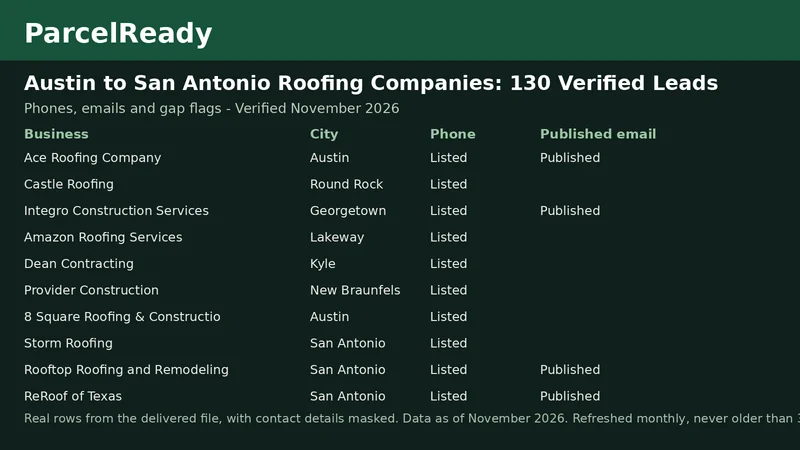
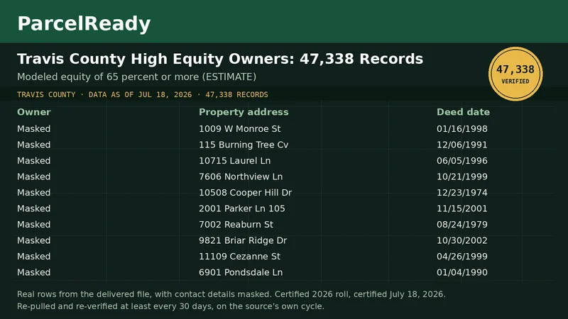
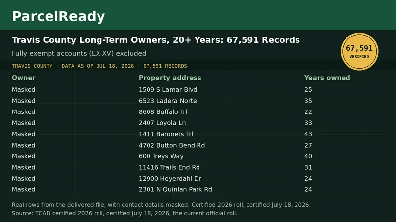
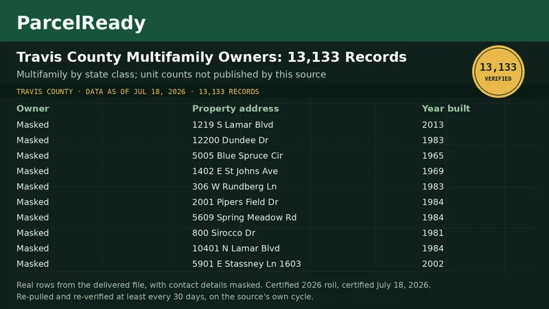
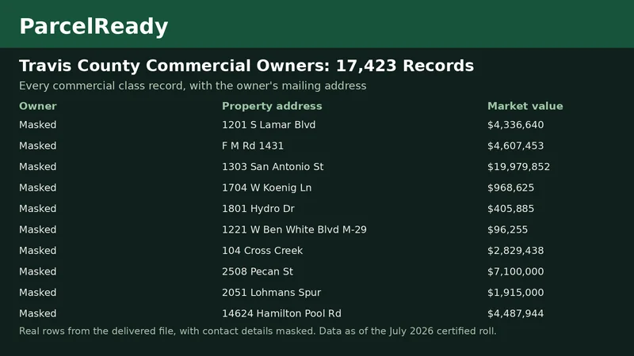
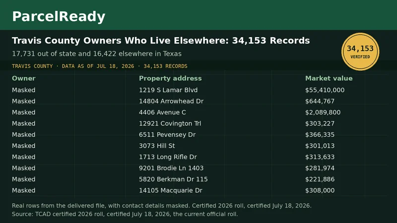

Austin to San Antonio Roofing Companies
130 verified local leads across 26 corridor cities
Data as of November 16, 2026
Fully re-verified monthly
130 verified companies$79 one time
Metro catalog
A metro here means the area the way buyers actually work it, not one county line. Austin to San Antonio covers The I-35 corridor: Travis, Williamson, Hays, Comal, Guadalupe, and Bexar counties. 7 packs live for this metro today.
Membership is sold by metro: members hold the current file on every refresh. The Texas state tier, carrying every metro in the state, is the step up.

130 verified local leads across 26 corridor cities
Data as of November 16, 2026
Fully re-verified monthly

47,338 residential owners with modeled equity of 65 percent or more (ESTIMATE)
Data as of July 18, 2026
Refreshed monthly, plus a full rebuild after each annual certified roll

67,591 Travis County owners who have held their property 20 years or more
Data as of July 18, 2026
Refreshed monthly, plus a full rebuild after each annual certified roll

3,070 properties held by 354 Travis County owners with 5 or more homes, half held since 2015 or earlier
Data as of July 18, 2026
Refreshed monthly, plus a full rebuild after each annual certified roll

13,133 multifamily properties in Travis County, with owner mailing addresses
Data as of July 18, 2026
Refreshed monthly, plus a full rebuild after each annual certified roll

17,423 commercial property owners in Travis County, with mailing addresses
Data as of July 18, 2026
Refreshed monthly, plus a full rebuild after each annual certified roll

34,153 Travis County residential owners whose mailing address is out of the area: 17,731 out of state and 16,422 elsewhere in Texas
Data as of July 18, 2026
Refreshed monthly, plus a full rebuild after each annual certified roll